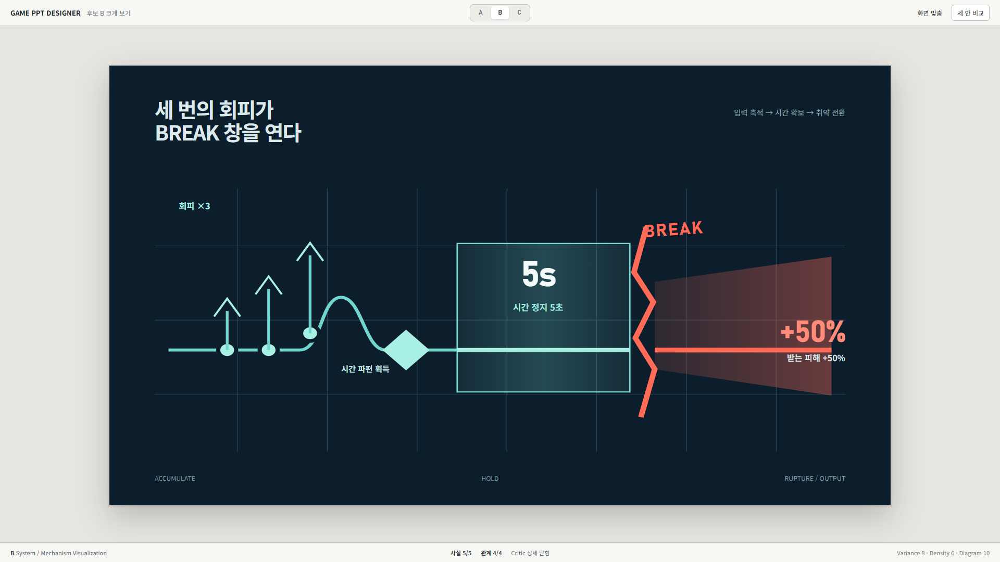

GAME PPT DESIGNER
Critic K2
Edit
Candidates
Critic
Finding 01
Before / After
Actual render
Before
render 06 · selected finding

01 · low projection legibility
After proposal
same zoom · one bounded patch
ACCUMULATE
HOLD
RUPTURE / OUTPUT
PATCH PREVIEW
Source fixed
· 회피 ×3 → 시간 파편 획득 → 시간 정지 5초 → BREAK → 받는 피해 +50%
Facts 5/5
Relations 4/4
Content hash same
Geometry pass